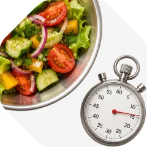
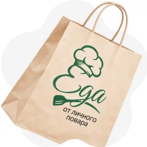
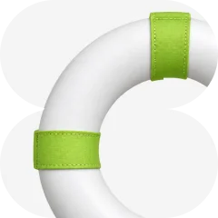

Выпускник Culinary Arts Academy Switzerland, работал в ресторанах Швейцарии и США
 Отбор поваров
Отбор поваров

Плюсы сервиса
Наши ценности
Нужна помощь? Стать поваромПовар или блюдо
Шеф-повар с 10-летним стажем и международным опытом
Профессиональный повар, стаж более 20 лет